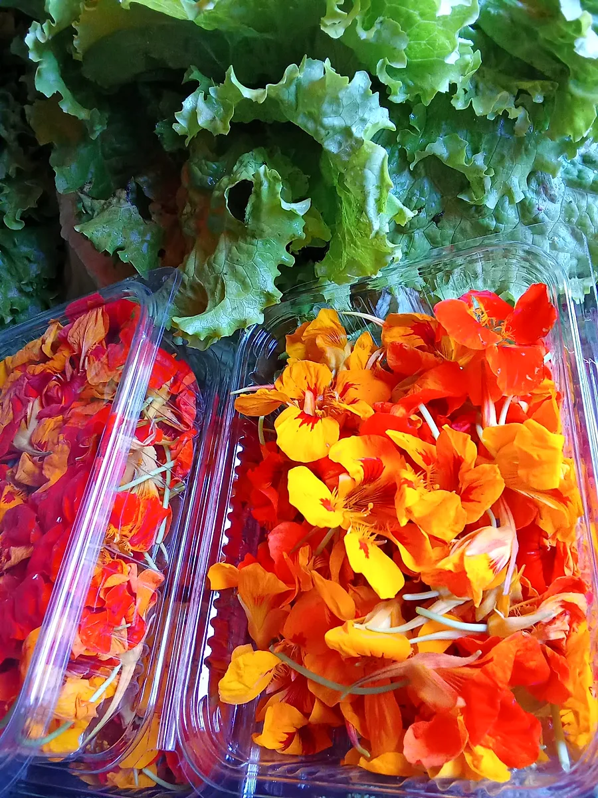
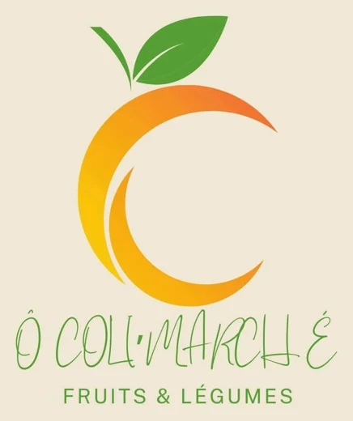
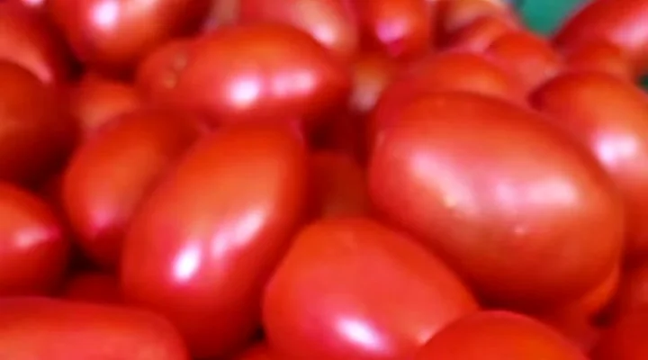
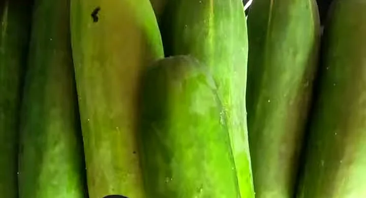
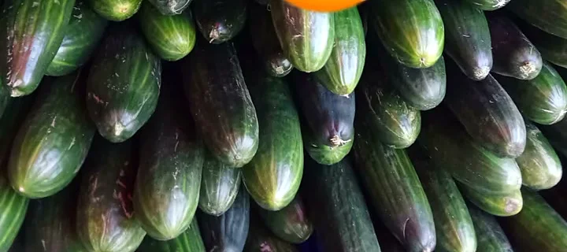

Promo du jour
Tomates bien rouges
Brillantes, charnues, parfaites pour un rougail ou une salade.


Les Colimaçons · Saint-Leu
Fruits · Légumes · Fleurs
Un stand de fruits et légumes frais et de saison, au cœur des Colimaçons. Proximité, qualité !
Le stand du quartier
Proximité, qualité !
Ô Coli'Marché, c'est le stand de fruits et légumes des Colimaçons, tout près du cimetière : des produits frais et de saison, des fleurs pour faire plaisir, des gâteaux faits maison, et chaque jour une nouvelle promo à découvrir.
Le stand vous accueille tous les jours, de 6h30 à 18h30. Et l'ambiance, l'équipe la signe elle-même sous ses vidéos : #Ambiance #joie.

Sur l'étal
Quelques beaux produits vus passer sur la page du stand ces derniers mois. Les arrivages changent avec les saisons : le plus simple, c'est de demander ce qui est arrivé ce matin.
Brillantes, charnues, parfaites pour un rougail ou une salade.

Le 2 juillet, un concombre offert dès 10 € d'achat : croquants et bien verts.

Pour le rougail aubergine ou un bon gratin du dimanche.
L'arrivage du 13 juin, salué sur la page d'un « Qualité excellence ! ».
« Délicieux, savoureux, exquis ! » : de quoi finir les courses sur une note sucrée.
Couleurs, fraîcheur et petites surprises, renouvelées chaque matin.
Faites glisser →
Les mots du Coli'Marché
« Vos commentaires nous touchent vraiment beaucoup ❤️ Nos chers clients, nous vous adorons ! »Publication de la page Ô Coli'Marché, 7 juin 2026
Venir au stand
6h30 – 18h30
Ouvert 7 jours sur 7, week-end compris.
Pour les fêtes
Pour les repas de fin d'année, le Coli'Marché a tout ce qui fait une belle table : des fruits frais pour le dessert, des légumes pour le carry du réveillon, des fleurs pour décorer ou offrir.
À très vite au stand
Tous les jours de 6h30 à 18h30, près du cimetière des Colimaçons à Saint-Leu. Suivez les arrivages et les promos du jour sur la page Facebook.